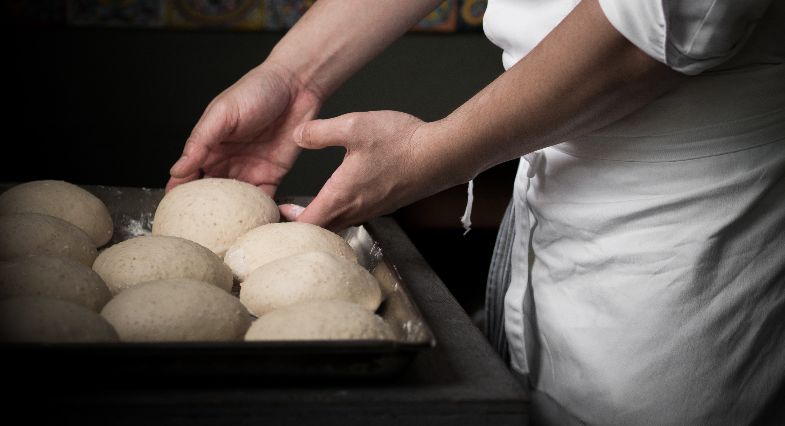
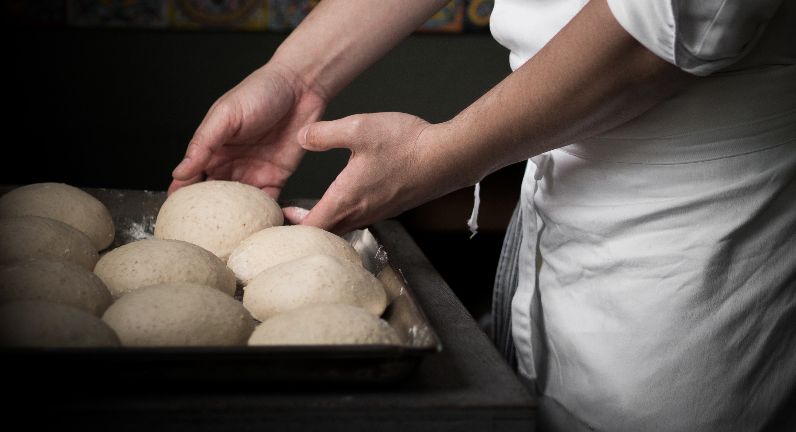
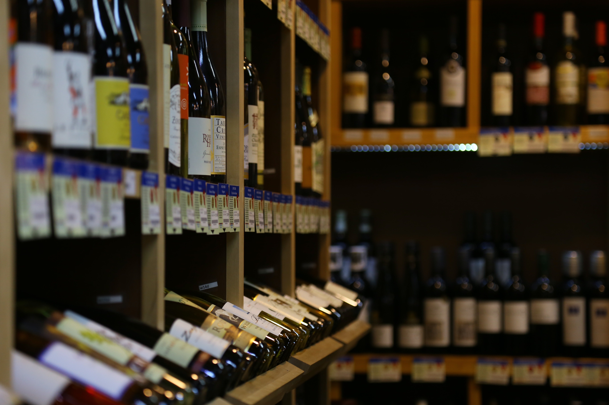

Pines of Nowhere is a Modern American restaurant dedicated to seasonal cooking and sourcing from local farms and waters. Our menu showcases the bounty of the Chesapeake Bay watershed in thoughtful, delicious and beautiful dishes that aim to nourish and surprise.
The food is accompanied by a program of fine craft cocktails and an expertly curated wine list. Each week, a limited number of 15-course tasting menus are available at our chef’s counter, offering parties of two a unique and intimate chef-driven experience.
Come find us at 1234 Chesapeake Bay Drive! Our hours are 7am - 10pm every day of the week!